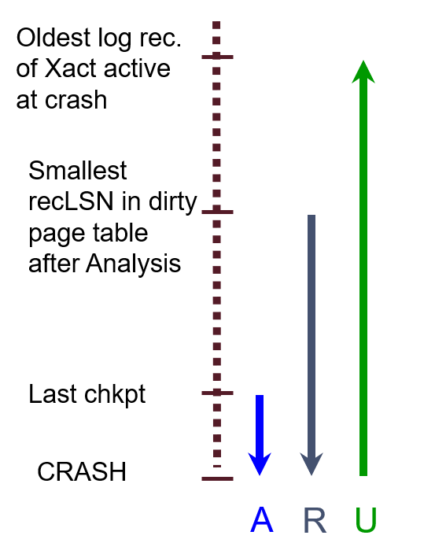

MIT 6.830 数据库实验 Lab 6 实验报告
摘要
Lab 6 要求实现数据库的恢复功能。在真实场景下，数据库可能因为种种原因宕机崩溃，需要保证此时的数据不会丢失，保证数据库事务的 ACID 性质。这往往要通过日志来实现。
理论知识
前面提到了，事务需要具备 ACID 性质，其中有两点需要关注：
- 原子性：事务可能会中止，需要回滚
- 持续性：如果 DBMS 崩溃了怎么办
事务中止的原因可能有很多，例如执行出错、出现死锁等。DBMS 崩溃的原因也有很多，例如磁盘空间不足、管理员误操作等。如何在这些场景下保证数据库的一致性、可靠性等，是一个很重要的问题。看过之前博客的同学可能记得，在 Lab4 中，实现了 NO STEAL 的模式。其思想是将事务的脏页面在 BufferPool 中置顶，不将其逐出，直到事务提交后再逐出。这在一定程度上可以解决原子性的问题，但是 BufferPool 一旦满了，DBMS 就直接崩溃了。
WAL
数据库常使用先写日志（Write-Ahead Logging，WAL）与 ARIES 算法解决原子性和持续性的问题。WAL 的思想是，先写日志，再写数据，遵循下面的协议
- 在更新数据到磁盘前，必须强制保存日志
- 在事务提交前，必须强制保存所有日志
日志是一个多元组，例如 <XID, pageID, offset, length, old data, new data>，包含事务 ID、页面 ID、偏移、修改前后的数据等信息。有了这些信息，就可以解决 ACID 的两个问题：
- 如何回滚事务：根据日志，回滚该事务，用旧值覆盖新值
- 如果 DBMS 崩溃了怎么恢复：根据日志，重做部分事务，用新值替换旧值
可以看到，在 WAL 的写日志协议中，第一点包含了 UNDO 的信息，保证了写到磁盘的数据必定可以通过日志回滚，确保了原子性，第二点包含了重做的信息，保证了已经提交的事务，必定可以通过日志重新复现其结果，确保了持续性。
WAL 容易混淆的一点是，因为写日志先于写磁盘，所以：
- 日志中出现了 UPDATE 记录，并不意味更新在磁盘上生效了
- 日志中出现了 COMMIT 记录，并不意味着事务在磁盘上提交到 DBMS 了
所以，对于日志中的 COMMIT 的事务，也需要对其重做，因为它的结果可能并没有保存到磁盘中。WAL 确保了可以通过日志撤销和重做操作，与我们平时的使用日志习惯：“先出现现象，再记录现象”，是相反的。这点需要深刻理解。
ARISE
ARISE 算法就使用这种 WAL 的日志，在数据库崩溃时，分三阶段处理：
- 分析：分析最新的检查点到崩溃中间的日志，分析崩溃时的状态
- BufferPool 中有哪些脏页面
- 还有哪些事务正在运行（即崩溃中止了）
- 重做：从脏页面对应的日志中的最早修改记录开始，逐个地重做结果
- 撤销：从崩溃位置开始，到崩溃中止事务的最早日志，倒序地撤销结果
如下图所示（来自伯克利 CS186），A、R、U 分别对应阶段 1、2、3。需要注意的是，重做的时候重做了所有的操作，包含最后中止的事务操作。这样的优点是确保不会出错，能够完美复现数据库崩溃时的状态，而且扩展性更好。撤销的时候需要倒序撤销，因为同一个页面可能被更新多次，撤销的最终结果的修改的最初结果。

Exercise
Preliminary
首先介绍下 SimpleDB 的日志模块，根据 LogFile 可知，其日志的格式如下：
- 文件最开始的 8 个字节，标识日志文件中最新的检查点在文件中的偏移
- 之后每条记录的格式为
<int Type, long tid, [additional info], offset>，其中- Type 标识了日志的类型，有事务开始、更新数据、创建检查点、事务提交、事务中止五种
- tid 标识了事务的 ID
- additional info 记录了额外的数据，只有更新数据、创建检查点时存在。
- 更新数据时，保存修改前后的页面数据
- 创建检查点时，保存此时所有未结束的事务，及其在日志中的第一条日志的偏移
- offset 记录了该条日志的起始在文件中的偏移
从代码注释可以看出，在事务中止，释放其锁之前，会调用 logAbort()
->
rollback() 方法，撤销该事务的操作，并在日志中留下一条 ABORT 记录。这是需要注意的。
Rollback
首先要实现的 rollback(tid) 方法，回滚被中止掉的事务的操作。前面提到，回滚需要倒序扫描日志。不过实验报告中描述的是从事务开始扫描，并提供了 tidToFirstLogRecord 的 Map 来把事务映射到日志第一条记录。所以我按从头开始扫描实现的。从头扫描要注意不要重复地回滚页面，需要维护一个 Set，记录哪些页面已经被回滚过了，再次遇到就直接跳过。
Recover
故障恢复则相对复杂一些。它包含三个步骤
- 重建检查点（如果存在检查点的话），重建运行中的事务，日志偏移的 Map 映射，即
tidToFirstLogRecord - 从检查点（或文件开始），逐个地重做日志操作
- 到日志结束到达崩溃点时，回滚此时还在运行的事务
首先，为什么可以安全地从检查点加载开始呢？因为在记录检查点的 logCheckpoint 方法中，调用 flushAllPages() 将 BufferPool 中的脏页面全部写回了磁盘。所以检查点对应的 BufferPool 中是没有脏页面的，可以安全地作为起始点。
其次，在重做日志中，需要注意以下事项：
- 维护
tidToFirstLogRecord，因为它会影响最后回滚日志的逻辑，需要在事务开始、提交、中止时维护其状态 - 需要重做 ABORT。即对于日志中的
ABORT tid的记录，需要重做，即将其回滚。
重做 ABORT 听上去与之前的 ARISE 算法有些矛盾。因为 ARISE 是先重做再回滚的，这里为什么在重做的中间就回滚了事务呢？事实上，这里需要区分两种要回滚的事务：
- 日志中正常输出 ABORT 的事务：可能是因为死锁等原因中止。SimpleDB 强制这些事务中止前调用了
logAbort方法，回滚操作且写到日志中。 - 崩溃时意外中止的事务：这些事务在日志中只有开始记录，没有 COMMIT 或者 ABORT 记录
理解了这两者的区别，就会发现真正需要在 ARISE 第三阶段回滚的，是第二类的事务。第一类的事务是正常的回滚，在重做时，需要同样回滚才能保持后续的状态一致。
总结
数据库的恢复是个非常复杂的过程，本人上述的理论知识也省去了一些篇幅。SimpleDB 也对恢复过程做了简化，但这两个 Exercise 也还是 “五脏俱全” 的，包含了各种日志类型、检查点、重做和撤销等核心要点。
到这里，SimpleDB 的 6 个 Lab 就正式结束了。这个实验课程的质量真的很高，从底层的磁盘文件逐步地构建一个数据库系统，过程中做了很多简化以避免过于复杂的无聊操作，保留了精华的重点难点。独立地完成这个实验课，真的能让人学到很多。